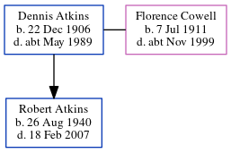

Dennis Thomas Atkins 1906 - c1989
[ Home ] | [ Calendar ] | [ Surnames Index ] | [ Census Index ] | [ Family History ]A heavy farm laborer, Dennis Atkins, the husband of Florence Emily Cowell (the first cousin once-removed on the mother's side of Nigel Horne), was born in Tilmanstone, Kent, England on Dec 22, 19061,2,3, was baptized there on Feb 21, 1907 and married Florence (with whom he had 1 child, Robert Francis) in Thanet, Kent, England on Jun 4, 19324. On Sep 29, 1939, he was living on Little Knell Farm Cottage, Knell Lane, Ash, Kent1.
He died c. May 1989 in Dover, Kent, England2.
Children
- Robert Francis was born on Aug 26, 1940
Citations
- 1939 Register - Findmypast (was the head of the household)
- England & Wales deaths 1837-2007 - Findmypast
- England Births & Baptisms 1538-1975 - Findmypast
- England & Wales, Marriage Index: 1916-2005 Online publication - Provo, UT, USA: The Generations Network, Inc., 2009.Original data - General Register Office. England and Wales Civil Registration Indexes. London, England: General Register Office. © Crown copyright. Published by permission of the Cont
Media
Double Wedding

1939 Register Image - TNA-R39-1819-1819C-006
England & Wales marriages 1837-2008 Transcription - BMD-M-1932-2-AZ-000214-094
England & Wales births 1837-2006 - BMD/B/1907/1/AZ/000019/354
England Births & Baptisms 1538-1975 - R_884725086
England & Wales deaths 1837-2007 - BMD/D/1989/5/77100206
1939 Register - TNA/R39/1819/1819C/006/37
Family Tree
Generated by ged2site. Last updated on Jun 11, 2024